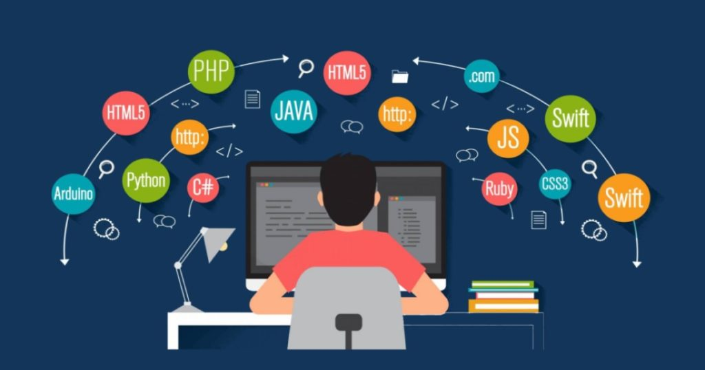
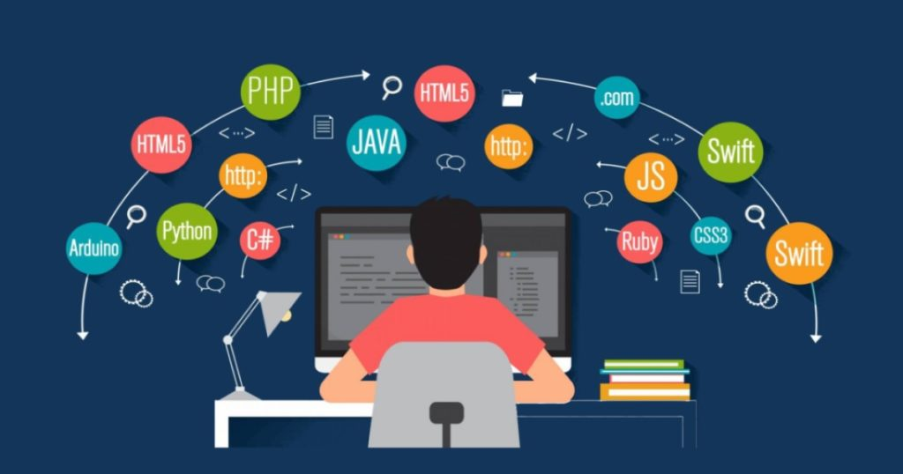

Selamat Datang Di Portofolio Muhammad Nizar
Halo! Saya Muhammad Nizar. Saya seorang pengembang web yang memiliki keahlian di bidang
Pengantar
Selamat datang di portofolio saya! Saya adalah seorang pengembang web yang bersemangat dengan latar belakang dalam desain dan pengembangan aplikasi. Dengan pengalaman yang luas dalam berbagai teknologi web, saya berkomitmen untuk menciptakan solusi digital yang tidak hanya menarik secara visual tetapi juga fungsional. Dalam portofolio ini, Anda akan menemukan berbagai proyek yang telah saya kerjakan, serta keterampilan yang saya miliki dalam dunia pengembangan web.
Penutup
Saya percaya bahwa pembelajaran tidak pernah berhenti. Saya selalu berusaha untuk memperbarui keterampilan dan pengetahuan saya dengan mengikuti tren terbaru dalam teknologi dan desain web. Saya berharap portofolio ini dapat memberikan gambaran yang jelas tentang kemampuan dan dedikasi saya dalam dunia pengembangan web. Terima kasih telah mengunjungi portofolio saya, dan saya berharap dapat berkolaborasi dalam proyek yang menarik di masa depan.
Pengembang Frontend
 
